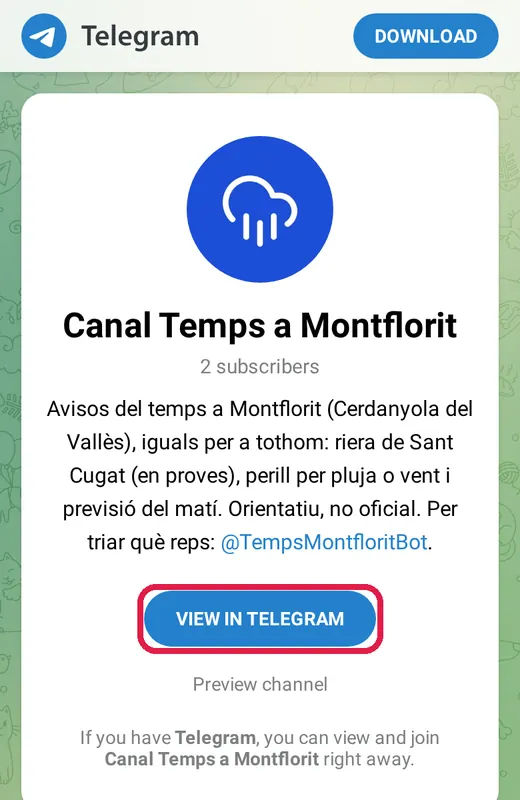
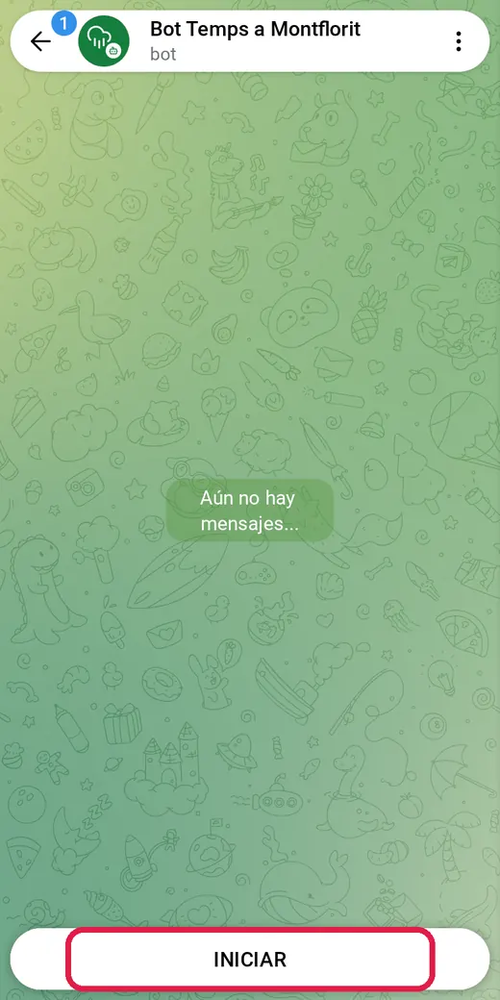
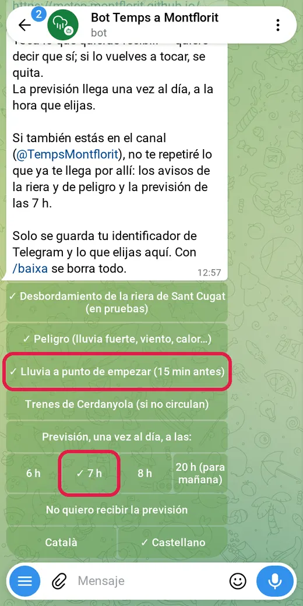
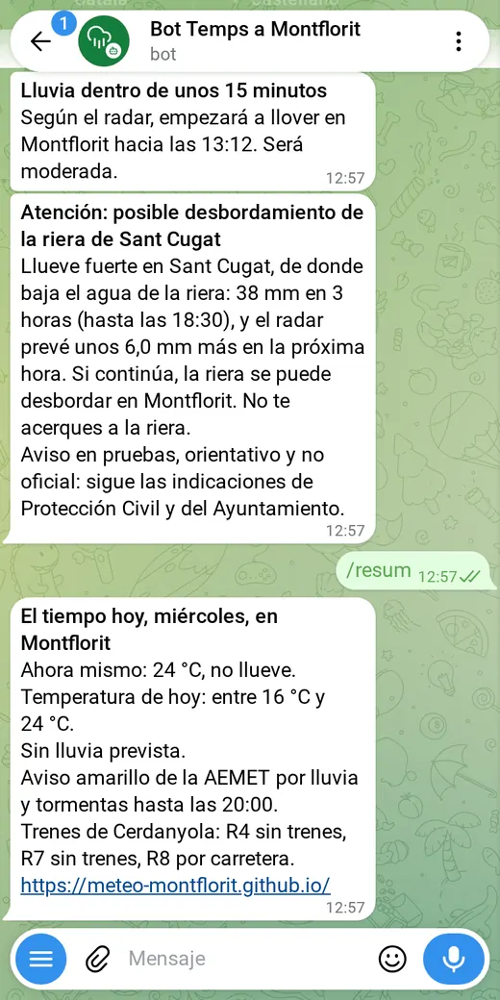
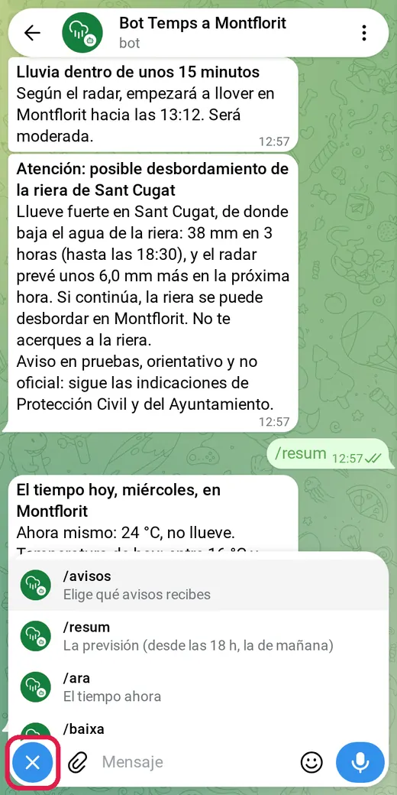

Puedes recibir en el móvil, en Telegram, los avisos del tiempo en Montflorit por el canal, por el bot o por los dos. El canal es lo más sencillo; el bot tiene bastantes más opciones. Si usas los dos, el bot no te repetirá lo que ya te da el canal.
Primero hay que tener Telegram en el móvil. Es gratuito: telegram.org.
Canal Temps a Montflorit
El mismo para todo el mundo, como un tablón de anuncios, en catalán. No hay que elegir nada: recibes los avisos de situaciones de peligro (tiempo extremo, incendios forestales en Collserola a 5 km o menos del barrio y en cualquier sitio a 2 km o menos y los avisos oficiales nuevos de Meteocat y de Protección Civil, y los de la AEMET para lo que Meteocat no avisa), los de la riera, los cortes de luz del barrio y la previsión de cada mañana y la de mañana a las 21 h.
O escríbelo en el buscador de Telegram: @TempsMontflorit
Toca «Abre el canal» y, en la página que se abre, el botón azul.

En Telegram, toca el botón de abajo para unirte. Ya está.
Bot Temps a Montflorit
Solo para ti, y con más opciones que el canal: eliges qué avisos quieres (también cuando está a punto de llover) y a qué hora recibes la previsión, y le puedes preguntar cuando quieras, también por el sol, el aire, el polen, los trenes y el tráfico.
O escríbelo en el buscador de Telegram: @TempsMontfloritBot
Toca «Abre el bot» y, en Telegram, «Iniciar».

Toca lo que quieras recibir: ✓ quiere decir que sí. Elige también la hora de la previsión.

Ya está. Los avisos te llegarán así.

Para cambiarlo, toca el botón de menú de abajo a la izquierda y elige /avisos. Para dejarlo, /baixa.

Desde el mismo menú le puedes preguntar cuando quieras: /avui (la previsión de hoy), /dema (la de mañana), /ara (el tiempo ahora), /radar, /sol, /aire, /pollen, /trens, /busos, /transit y /avisos_actius (los avisos oficiales y el tiempo excepcional).
Los avisos los calcula un programa y son orientativos, no oficiales; los de la riera, además, están en pruebas. Sigue siempre a Protección Civil y al Ayuntamiento. Qué guarda el bot: Privacidad.